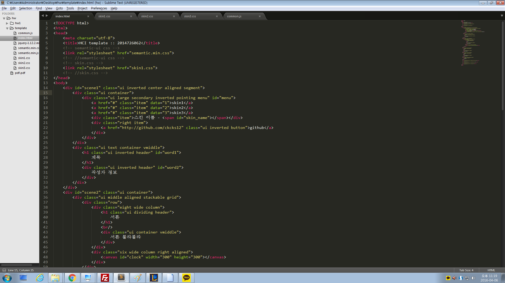

이것은 휴먼 컴퓨터 인터페이스 수업의 첫 번째 과제입니다.
보고서 템플릿을 만드는 과제였습니다. 보고서에 들어갈 내용은 아래와 같습니다.
보고서 템플릿을 만드려 할 때 제일 먼저 들었던 생각은 "귀찮다"였습니다.
그러나 교수님의 명강의를 들으니 꿈틀거리는 제 학고열을 막을 순 없었습니다.
그렇지만 웹의 디자인은 굉장히 손이 많이 가지요. 크로스 브라우저를 고려한다던지 등.
또한 웹의 생산성은 생명이라고 생각합니다. 그래서 CSS library를 활용하기로 했습니다.
제가 사용한 CSS library는 Semantic-UI입니다.
Semantic-UI(이하 시맨틱)을 사용하여 전체적인 레이아웃과 디자인을 동시에 잡았습니다.
그리고 skin 단위로 scene1의 배경색과 페이지 전체의 폰트 그리고 스킨 이름을 커스터마이징했습니다.
또한 canvas 사용을 위해 W3Schools(이하 w3)에서 공부했습니다.
마지막으로 앞으로의 과제를 위해 웹 에디터 툴을 정하고 익혔습니다.
저는 SublimeText(이하 st)를 익혔습니다.(아래 사진 첨부)
canvas를 이용해 시계를 그릴때 마치 절차지향 프로그래밍을 하는 것 같아 감회가 새로웠습니다.
또한 상단의 skin1, skin2, skin3를 누르면 각각 해당 skin으로 자동으로 로딩을 하도록 코딩을 했는데
굉장히 뿌듯하고 좋았습니다. css의 content property로 스킨 이름까지 출력하니 좋았습니다.
하지만 아쉬운 점이 있습니다.
바로 skin 별로 다양한 디자인을 보여주지 못하는 점입니다.
사실 css로 구조까지도 바뀌는 듯한 모습을 보여줄 수 도 있고
css3의 animation을 보여줄 수 도 있지만
빈 도화지에 그림을 그린다는 것이 어려운 것처럼
디자이너의 와이어프레임 없이 직접 웹 디자인을 한다는 것이 생각보다 어려웠습니다.
단순히 코딩 능력에만 치우치지 말고
다양한 디자인을 접하며 감각을 키워가야 한다고 생각이 됩니다.
참고자료
1. 이강훈 교수님의 온라인 명강의(유캠퍼스의 post 방식의 매핑으로 다이렉트 링크는 없습니다)
2. Semantic-UI(http://semantic-ui.com)
3. W3Schools(http://w3schools.com)
4. SublimeText(http://sublimetext.com)